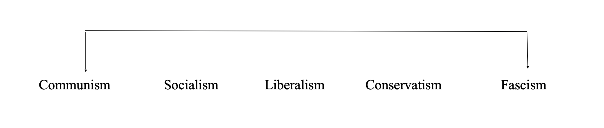

Tip for people who don't have a habit of reading: Scroll directly to the topics you are familiar with like "democracy" and "capitalism" and read only those first. This is a fairly long post intended for research and development of the subject matter.
The German poet Bertolt Brecht wrote, "The worst illiterate is the political illiterate, he doesn't hear, doesn't speak, nor participates in the political events. He doesn't know the cost of life, the price of the bean, of the fish, of the flour, of the rent, of the shoes and of the medicine, all depends on political decisions. The political illiterate is so stupid that he is proud and swells his chest saying that he hates politics. The imbecile doesn't know that, from his political ignorance is born the prostitute, the abandoned child, and the worst thieves of all, the bad politician, corrupted and flunky of the national and multinational companies." At the outset, this quote seems to emphasis on the need for political participation by the people of a state. Although, such an activity seems to be as easy as cursing the government and yelling at the news on the TV screen, significant political participation involves regular follow up of the current affairs and minimum understanding of some of the major political ideologies that are out there. The word politics - although its meaning has evolved a lot - is derived from the Greek word, 'polis' which means city. Political science as a discipline is a social science which deals with systems of governance, and the analysis of political activities, political thoughts, and political behaviour [1]. It concerned with different approaches of governance which are precipitated as political ideologies. Throughout the course of history, different political ideologies have emerged; with the Greeks being the first to conceive the idea of democracy and theorizing about politics.
Liberalism: The term 'liberal has been in use since the fourteenth century but has had a wide variety of meanings. The Latin liber referred to a class of free men, in other words, men who were neither serfs nor slaves. It has meant generous, as in 'liberal' helpings of food and drink; or, in reference to social attitudes, it has implied openness or open-mindedness. Liberalism gives priority to 'the right' over 'the good'. In other words, liberalism strives to establish the conditions in which people and groups can pursue the good life as each defines it, but it does not prescribe or try to promote any particular notion of what is good. However, this does not mean that liberalism is simply a philosophy of 'do your own thing'. The moral and ideological stance of liberalism is embodied in a commitment to a distinctive set of values and beliefs. The most important of these are the following:
- The individual: Individualism is the belief in the supreme importance of the individual over any social group or collective body. In the form of methodological individualism, this suggests that the individual is central to any political theory or social explanation - all statements about society should be made in terms of the individuals who compose it. Whether human nature is conceived of as being egoistical or altruistic, liberals are united in their desire to create a society in which each person is capable of developing and flourishing to the fullness of his or her potential.
- Freedom: Individual liberty (liberty and freedom being interchangeable) is for liberals the supreme political value, and in many ways the unifying principle within liberal ideology. Nevertheless, liberals do not accept that individuals have an absolute entitlement to freedom. If liberty is unlimited it can become 'license', the right to abuse others. In On Liberty ([1859] 1972, p. 73) John Stuart Mill (see p. 31) argued that 'the only purpose for which power can be rightfully exercised over any member of a civilized community, against his will, is to prevent harm to others'.
- Reason: The liberal case for freedom is closely linked to a faith in reason. Liberalism is, and remains, very much part of the Enlightenment project. The central theme of the Enlightenment was the desire to release humankind from its bondage to superstition and ignorance, and unleash an 'age of reason'. It is associated with an emphasis on principle and reason governed behavior, as opposed to reliance on custom or tradition, or non-rational drives and impulses. This also explains the characteristic liberal emphasis upon education. People can better or improve themselves through the acquisition of knowledge and the abandonment of prejudice and superstition. Education, particularly in the modern liberal view, is thus a good in itself.
- Justice: Justice denotes a particular kind of moral judgment, in particular one about the distribution of rewards and punishment. In short justice is about giving each person what he or she is 'due'. The liberal theory of justice is based upon a belief in equality of various kinds. The liberals hence believed in foundational equality, which means that human beings are seen to be 'born' equal in the sense that each individual is of equal moral worth, an idea embodied in the notion of natural rights or human rights. This implies formal equality, which means that liberals fiercely disapprove of any social privileges or advantages that are enjoyed by some but denied to others on the basis of factors such as gender, race, colour, creed, religion or social background. Rights should not be reserved for any particular class of person, such as men, whites, Christians or the wealthy. The former emphasizes 'equality before the law' and insists that all non-legal factors be strictly irrelevant to the process of legal decision-making. The latter is embodied in the idea of 'one person, one vote; one vote, one values', and underpins the liberal commitment to democracy. Third, liberals subscribe to a belief in equality of opportunity. Each and every individual should have the same chance to rise or fall in society. This leads to a belief in 'meritocracy' - literally, rule by the talented or able
- Toleration and diversity: The liberal social ethic is very much characterized by a willingness to accept and, in some cases, celebrate moral, cultural and political diversity. Indeed, pluralism or diversity can be said to be rooted in the principle of individualism, and the assumption that human beings are separate and unique creatures. Pluralism, in its broadest sense, is a belief in or commitment to diversity or multiplicity, the existence of many things. As a descriptive term, pluralism may denote the existence of party competition (political pluralism), a multiplicity of ethical values (moral or value pluralism), a variety of cultural beliefs (cultural pluralism) and so on. However, liberal toleration does not imply support for unrestricted pluralism and diversity. Liberals may, for instance, be prepared to support laws forbidding the expression of, for instance, racist opinions or laws that ban undemocratic political parties, on the grounds that the spread of such opinions or the success of such parties is likely to spell the demise of liberal toleration.
Democracy: The origins of the term 'democracy' can be traced back to Ancient Greece. Like other words ending in 'cracy' - autocracy, aristocracy, bureaucracy and so on - democracy is derived from the Greek word kratos, meaning power or rule. Democracy thus stands for 'rule by the demos', demos meaning 'the people', though it was originally taken to imply 'the poor' or 'the many'.
- Liberal democracy is an indirect and representative form of democracy. Political office is gained through success in regular elections, conducted on the basis of formal political equality - 'one person, one vote; one vote, one value'.
- It is based upon competition and electoral choice. This is ensured by political pluralism, a tolerance of a wide range of contending beliefs, conflicting social philosophies and rival political movements and parties.
- It is characterized by a clear distinction between the state and civil society. This is maintained both by internal and external checks on government power and the existence of autonomous groups and interests, and by the market or capitalist organization of economic life.
Conservatism: In everyday language, the term 'conservative' has a variety of meanings. It can refer to moderate or cautious behavior, a life-style that is conventional, even conformist, or a fear of or refusal to change, particularly denoted by the verb 'to conserve'. As conservative ideology arose in reaction against the French Revolution and the process of modernization in the West, it is less easy to identify political conservatism outside Europe and North America. Conservative thought has varied considerably as it has adapted itself to existing traditions and national cultures. The most significant of its central beliefs are the following:
- Tradition: Conservatives have argued against change on a number of grounds. A central and recurrent theme of conservatism is its defense of tradition - values, practices and institutions that have endured through time and, in particular, been passed down from one generation to the next. Liberals, in contrast, argue that social institutions should not be evaluated according to how long they have survived, but how far they fulfil the needs and interests of individuals. For some conservatives, this conclusion reflects their religious faith. If the world is thought to have been fashioned by God the Creator, traditional customs and practices in society will be regarded as 'God given'. Most conservatives, however, support tradition without needing to argue that it has divine origins. Tradition reflects the accumulated wisdom of the past. The institutions and practices of the past have been 'tested by time' and should therefore be preserved for the benefit of the living and for generations. Conservatives also venerate tradition because it generates, for both society and the individual, a sense of identity. Established customs and practices are ones that individuals can recognize; they are familiar and reassuring.
- Human imperfection: In many ways conservatism is, a 'philosophy of human imperfection'. Human imperfection is understood in several ways. In the first place, human beings are thought to be psychologically limited and dependent creatures. In the view of conservatives, people fear isolation and instability. They are drawn psychologically to the safe and the familiar, and, above all, seek the security of knowing 'their place'. This belief that individuals desire security and belonging has led conservatives to emphasize the importance of social order, and to be suspicious of the attractions of liberty.
- Organic society: The conservative view of society is very different from that of liberalism. Liberals believe that society arises from the actions of individuals, each intent upon pursuing self-interest. The individual cannot be separated from society, but is part of the social groups that nurtures him or her. As a result, traditional conservatives are reluctant to understand freedom in terms of 'negative freedom', in which the individual is 'left alone'. Freedom is rather a willing acceptance of social obligations and ties by individuals who recognize their value.
- Hierarchy and authority: Conservatives have traditionally believed the society is naturally hierarchical, characterized by fixed or established social gradations. Social equality is therefore rejected as undesirable and unachievable; power, status and property are always unequally distributed. Genuine social equality is therefore a myth; in reality, there is a natural inequality of wealth and social position, justified by a corresponding inequality of social responsibilities.
- Property: Property is an asset that possesses a deep and at times almost mystical significance for conservatives. Property, whether the ownership of a house or savings in the bank, provides individuals with a source of protection. Conservatives therefore believe that thrift - caution in the management of money - is a virtue in itself and have sought to encourage private savings and investment in property [6].
Capitalism: The word capital means wealth in the form of money or other assets owned by a person or organization or available for a purpose such as starting a company or investing. So, basically, more the money you own, more money you have. Capitalism is an economic and political system in which a country's trade and industry are controlled by private owners for profit, rather than by the state. Capitalistic ownership means two things. First, the owners control the factors of production. Second, they derive their income from their ownership. That gives them the ability to operate their companies efficiently. It also provides them with the incentive to maximize profit. Capitalism requires a free market economy to succeed. It distributes goods and services according to the laws of supply and demand. The law of demand says that when demand increases for a particular product, price rises. When competitors realize they can make a higher profit, they increase production [7].
Socialism: Socialism, is either understood as an economic system opposite to idealism or as an instrument of the labour movement. Socialism, in this view, represents the interests of the working class and offers a program through which the workers can acquire political or economic power. Socialism is thus really a form of 'labourism', a vehicle for advancing the interest of organized labour. The most significant of these are the following:
- Community: At its heart, socialism possesses a unifying vision of human beings as social creatures, capable of overcoming social and economic problems by drawing upon the power of the community rather than simply individual effort. Socialists are far less willing than either liberals or conservatives to believe that human nature is unchanging and fixed at birth. Rather they believe that human nature is 'plastic', moulded by the experiences and circumstances of social life. Liberals and conservatives often argue that, at heart, human beings are essentially self-seeking and egoistical. Socialists, on the other hand, regard selfish, acquisitive, materialistic or aggressive behaviour as socially conditioned rather than natural.
- Cooperation: If human beings are social animals, socialists believe that the natural relationship amongst them is one of cooperation rather than competition. Liberals and conservatives regard competition amongst human beings as natural and, in some respects, healthy. Socialists, on the other hand, believe that competition pits one individual against another, encouraging each of them to deny or ignore their social nature rather than embrace it. Socialists believe that human beings can be motivated by moral incentives and not merely by material incentives. In theory, capitalism rewards individuals for the work they do: the harder they work, or the more abundant their skills, the greater their reward will be. The moral incentive to work hard, however, is the desire to contribute to the common good, which develops out of a sympathy or sense of responsibility for fellow human beings.
- Equality: A commitment to equality is in many respects is the defining feature of socialist ideology, equality being the political value that most clearly distinguishes socialism from its rivals, notably liberalism and conservatism. Socialism is characterized by its belief in social equality, or equality of outcome. Firstly, Socialists believe that just as capitalism has fostered competitive and selfish behaviour, human inequality very largely reflects the unequal structure of society. Socialists believe that the most significant forms of human inequality are a result of unequal treatment by society, rather than unequal endowment by nature.
- Social class: Social class refers, broadly, to groups of people who share a similar social and economic position. social classes, rather than individuals, are the principal actors in history and therefore provide the key to understanding social and political change. For example, the iniquities and injustices of the capitalist system are best explained by the tendency of the privileged and propertied classes to oppress and exploit subordinate classes
- Common ownership: Socialists have often traced the origins of competition and inequality to the institution of private property, by which they usually mean productive wealth or 'capital' rather than personal belongings such as clothes, furniture or houses. This attitude to property sets socialism apart from liberalism and conservatism, which both regard property ownership as natural and proper. In the first place, property is unjust: wealth is produced by the collective effort of human labour and should therefore be owned by the community, not by private individuals. Second, socialists believe that property breeds acquisitiveness and so is morally corrupting. Private property encourages people to be materialistic, to believe that human happiness or fulfilment can be gained through the pursuit of wealth.
Marxism: Marx himself believed that he had developed a new brand of socialism. At least three forms of Marxism can be identified. These are as follows:
- Classical: The core of classical Marxism - the Marxism of Marx - is a philosophy of history that outlines why capitalism is doomed and why socialism is destined to replace it. Marx embraced the belief that the driving force of historical change was the dialectic, a process of interaction between competing forces that leads to a higher stage of development. A dialect between a thesis and an anti-thesis. Ideas create materials and materials influence ideas. This type of dialect is called ' Materialistic Dialect' . Marx identified two main classes in Industrial capitalism: The proletariat (The working class) and the bourgeoisie (The capitalists). The former doesn' t own the means of production, while the latter do. It' s this difference in who owns the means of production, Marx said, that leads to exploitation in capitalism [6]. Marx thus explained historical change by reference to internal contradictions within each mode of production arising from the existence of private property. Capitalism is thus doomed because it embodies its own antithesis, the proletariat, seen by Marx as the ' grave digger of capitalism' . Since capitalism is a system of production for exchange, it alienates humans from the product of their labour: they work to produce not what they need or what is useful, but ' commodities' to be sold for profit. They are also alienated from the process of labour, because most are forced to work under the supervision of foremen or managers. Finally, workers are alienated from themselves. Labour itself is reduced to a mere commodity and work becomes a depersonalized activity instead of a creative and fulfilling one. Marx's most important prediction was that capitalism was destined to be overthrown by a proletarian revolution. This would be not merely a political revolution that would remove the governing elite or overthrow the state machine, but a social revolution that would establish a new mode of production and culminate with the achievement of full communism.
- Orthodox communism: This includes Leninism and Stalinism
Now are in a position to understand the meanings the political right, left and center. These terms were first used in the French revolution.
The difference between the left and the right comes down to individual liberty and government power. The left strives for an equal society, believing that the state should play a substantial role in people's lives. This means increased regulation on business and higher taxes on the rich. The left also holds more progressive views, often opposing death penalty, supporting same sex marriage and women's right to abortion. The left has lenient views on immigration and often support the separation between the church and the state. The level of government intervention depends on how far left it is, with the communists opting for complete government control, whereas the center left want only moderate intervention. The right tends to hold more traditional and religious attitudes, often opposing those things that the left support i.e. same sex marriage and abortion rights. Economically, the right tends to be using the New classical approach. Which includes 'Leave things alone' meaning, less regulation to increase innovation. And lower taxes to increase growth [8].
Various above ideas are derived from below exciting 6 sources:
1. The Evolution of Political Science (November 2006). APSR Centennial Volume of American Political Science Review. Apsanet. 4 February 2009.
2. J.S. McClelland (2005). A History of Western Political Thought. 11 New Fetter Lane, London. Taylor & Francis
3. Karl Marx & Conflict Theory: Crash Course Sociology #6:
https://www.youtube.com/watch?v=gR3igiwaeyc
4. Capitalism- pros and cons:
https://www.thebalance.com/capitalism-characteristics-examples-pros-cons-3305588
5. The Political Spectrum Explained In 4 Minutes.
https://www.youtube.com/watch?v=JlQ5fGECmsA&feature=youtu.be
6. Book: Andrew Heywood. (3rd Edn.). Political Ideologies.